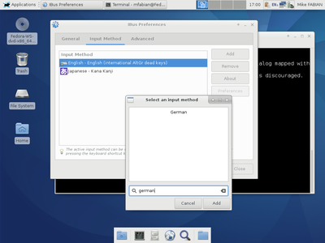
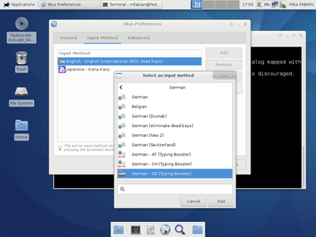
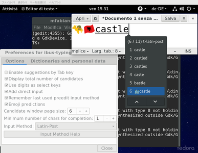
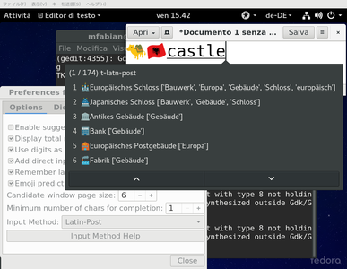
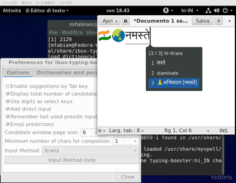
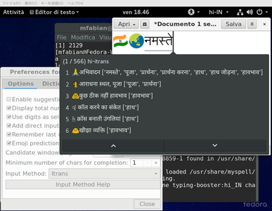
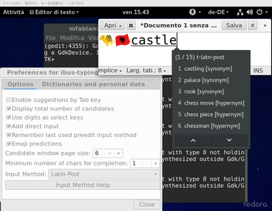

This section assumes that you have already installed ibus-typing-booster either using binary packages or from source and now want to add an ibus-typing-booster input method to your desktop.
The procedure to add an ibus-typing-booster input method differs slightly depending on which type of desktop you use, the following sections show the procedure for popular desktop choices.
|
|
First click on the panel menu in the top right corner of the desktop and then click on the “screwdriver and wrench” icon to open the Gnome3 control center.

|
Now the Gnome3 control center has opened. Click on the icon for the “Region & Language” settings.

|
Now the Gnome3 “Region & Language” settings dialogue has opened.
At the bottom you see a list of input sources which have already been added to the desktop before. In this case there are already: “English (US, with euro on 5)” and “Japanese (Kana Kanji)”. This is just an example of course, the list of already added input methods could look different for you. The first entry, “English (US, with euro on 5)”, is not really an input engine, it is just a keyboard layout. One can see that an entry in the list of input sources is a keyboard layout if it does not have the icon showing two tooth-wheels at the right side.
It is recommended to use a keyboard layout with ibus-typing-booster which has a real “AltGr” key and does not just make the “AltGr” or “Alt” key on the right side of the space bar basically a duplicate of the left “Alt” key. For details, see The “AltGr” key.
The second entry, “Japanese (Kana Kanji)” is an input engine, it has the icon showing two tooth wheels at the right side.
Now click on the “+” button at the lower left to add another input source.

|
Then click on the three vertical dots “⋮” to open the search entry field.

|
Type the word “booster” into the search entry field. All languages which are supported by ibus-typing-booster are listed now.

|
Scroll to the main language you want to use and select it. You may see typing booster engines for several variants of that language listed, in this example for three variants of German.
Select the variant of typing booster you want and click the “Add” button at the top right.

|
Now you you see an ibus-typing-booster engine listed in the “Region & Language” dialogue of Gnome3.
If you select it, a tooth wheel appears at the bottom right of the dialogue, clicking that opens the setup tool of that ibus-typing-booster engine.

|
Here you see the setup tool of that ibus-typing-booster engine where you can customize ibus-typing-booster according to your preferences.

|
Now open some programs where you could type something, for example “gedit” or “gnome-terminal”. And activate the ibus-typing-booster engine you want to use in the input source menu of the Gnome panel as shown in this screenshot.
When the input source menu of the Gnome panel is open and an ibus-typing-booster engine is selected, there is a menu entry “Setup” which is an quicker way to open the setup tool than going to the “Region & Language” settings dialogue.
Some options are also directly available in the input source menu of the gnome panel to have quicker access to these often used options than having to open the setup tool. There are also key bindings and mouse bindings for these frequently used options which are shown in the input source menu of the gnome panel as well as a reminder.

|
Now type something, for example into gedit and you should see some suggestions for completions.
At the beginning, the suggestions only come from the hunspell dictionaries and are thus not very good yet. But ibus-typing-booster learns from your typing, it remembers which words you use often in which context. Therefore, the suggestions become much better over time.
To switch between ibus-typing-booster and other input methods or a simple keyboard layout, you can use the input sources menu in the Gnome panel or the keyboard shortcut, which is Super+Space by default (can be changed in the gnome-control-center).
This chapter shows how to add an ibus-typing-booster input method on most desktops except Gnome3 and Unity. The screenshots in this chapter are using XFCE, but it is the same procedure on most other desktops and window managers as well, only Gnome3 and Unity are a bit special.
First start the ibus-setup program (For example by
typing ibus-setup & into a terminal.

|
If ibus-daemon is not yet running, ibus-setup
may ask whether you want to start it. In that case click on “Yes”.
If ibus-daemon was not already running, you probably also want
to make it run automatically every time when you log into your desktop.
If you are using Fedora you can do that for most desktops and window managers
using imsettings-switch like this:
imsettings-switch ibus
This will change some settings so that when you log in
next time, ibus-daemon will be running and the following
environment variables will be set:
export QT_IM_MODULE=ibus
export XMODIFIERS=@im=ibus
export GTK_IM_MODULE=ibus
If you don’t use Fedora and do not have the imsettings-switch,
there may be some other way to start ibus-daemon on your
system automatically and to set the above environment variables.
Or you can put the above environment variables into
your ~/.bashrc file and start ibus-daemon
from some X11 startup file or make your windowmanager start it. I am
using the “i3” windowmanager at the moment and have added the
line exec ibus-daemon -drx to
my ~/.config/i3/config file.

|
In the “General” tab of ibus-setup you see that the
default shortcut key to switch between input methods is “Super+Space”
and you can change this and some other options if you like.
Personally I like the extra property panel. Therefore, I set the “Show property panel” option to “Always” here.
You probably also want the option “Show icon on system tray” switched on.
And I usually choose a somewhat bigger font to be able to see the details in the emoji better.

|
Now use the “Input Method” tab of ibus-setup to add
an ibus-typing-booster engine.
You see a list of input sources which have already been added to the desktop before. In this case there are already: “English - English (international AltGr dead keys)” and “Japanese (Kana Kanji)”. This is just an example of course, the list of already added input methods could look different for you. The first entry, “English - English (international AltGr dead keys)”, is not really an input engine, it is just a keyboard layout.
It is recommended to use a keyboard layout with ibus-typing-booster
which has a real “AltGr” key and does not just make the “AltGr” or
“Alt” key on the right side of the space bar basically a duplicate
of the left “Alt” key. For details,
see The “AltGr” key. By the way,
in the “Advanced” tab of ibus-setup there is an option
“Use system keyboard layout”, if this option is selected,
ibus-typing-booster will always use the system keyboard layout,
otherwise it will use the keyboard layout from the list of input
methods which was used last before switching to ibus-typing-booster.
The second entry which is already there in the list of input methods, “Japanese (Kana Kanji)”, is a real input engine, not a keyboard layout.
Now click on the “Add” button at top right to add another input source.

|
If you do not see the main language you want to use listed already, click on the three vertical dots “⋮” to open the search entry field.

|
Now either scroll through the list or type the name of your language.
|  |
For example, when searching for “german”, it looks as in this screenshot.
|  |
Select your langauge, in this case “German” and scroll through the list of German input methods shown until you find one with “Typing Booster” in the name. There maybe more than one for variants of the language. Select the typing booster engine for your preferred language variant.
Click the “Add” button.

|
Now an ibus-typing-booster engine has been added to the list of input methods configured and it looks as in this screenshot.
If you select that typing-booster engine, you can click the “Preferences” button to open the setup tool of that typing-booster-engine.

|
Here you see the setup tool of that ibus-typing-booster engine where you can customize ibus-typing-booster according to your preferences.

|
Now open some programs where you could type something, for example “gedit” or “gnome-terminal”. And activate the ibus-typing-booster engine you want to use by clicking on the icon for the input methods in the system tray and selecting the ibus-typing-booster engine in the menu which opens.
When the input method menu of system tray icon is open and an
ibus-typing-booster engine is selected, there is a menu entry
“Setup” which is a quicker way to open the setup tool of that
ibus-typing-booster engine than doing it with
ibus-setup.
Some options are also directly available in the input method menu of the system tray icon to have quicker access to these often used options than having to open the setup tool of the ibus-typing-booster engine. There are also key bindings and mouse bindings for these frequently used options which are shown in the input method menu of the system tray icon as well as a reminder.
On the top left of this screenshot you see the “property panel” which shows the current status of some frequently used options which can also be changed by clicking on the “property panel”. The “property panel” also offers a button to open the setup tool of the ibus-typing-booster engine. You can move that “property panel” to around on your desktop to a convenient place.

|
Now type something, for example into gedit and you should see some suggestions for completions.
At the beginning, the suggestions only come from the hunspell dictionaries and are thus not very good yet. But ibus-typing-booster learns from your typing, it remembers which words you use often in which context. Therefore, the suggestions become much better over time.
To switch between ibus-typing-booster and other input methods or a
simple keyboard layout, you can use the input methods menu you get
by clicking on the system tray icon or you can use the keyboard
shortcut, which is Super+Space by default (can be changed using
ibus-setup).
I’ll write this section soon. Ibus-typing-booster works on the Unity desktop as well, there are only some minor differences in how the setup dialogues look like.
Ibus-typing-booster does not change your keyboard layout, it just uses the keyboard layout which was selected last.
As some of the key bindings in the table below use key combinations starting with “AltGr”, it is recommended to use a keyboard layout where the right “Alt” key is really an “AltGr” key and not just a duplicate of the left “Alt” key. If you do not have a real “AltGr” key, you can still use most of the key bindings in the table below but of course not those which start with “AltGr”.
The standard “English (US)” keyboard layout makes the “AltGr” key on the right side of the space bar basically behave as a duplicate of the left “Alt” key. So if you like the US English layout, better use the keyboard layout “English (US, with euro on 5)” instead of the standard one. “English (US, with euro on 5)” is very similar to the standard “English (US)” layout but has a real “AltGr” key.
Many (but not all) keyboard layouts for other languages different from US English already have a real “AltGr” key.
You can check whether your keyboard layout has a real “AltGr” key with “xev”, “xev” should show you the keysym “ISO_Level3_Shift” when pressing the “AltGr” (right “Alt”) key and not the keysym “Alt_R”.
| Key combination | Effect |
|---|---|
| Space | Commit the preëdit (or the selected candidate, if any) and send a space to the application, i.e. commit the typed string followed by a space. |
| Return | Commit the preëdit (or the selected candidate, if any) and send a Return to the application. |
| Enter | Commit the preëdit (or the selected candidate, if any) and send a Enter to the application. |
| Tab |
|
| Escape |
|
| Left (Arrow left) | Move cursor one typed key left in the preëdit text. May trigger a commit if the left end of the preëdit is reached. |
| Control+Left | Move cursor to the left end of the preëdit text. If the cursor is already at the left end of the preëdit text, trigger a commit and send a Control+Left to the application. |
| Right (Arrow right) | Move cursor one typed key right in preëdit text. May trigger a commit if the right end of the preëdit is reached. |
| Control+Right | Move cursor to the right end of the preëdit text. If the cursor is already at the right end of the preëdit text, trigger a commit and send a Control+Right to the application. |
| Backspace | Remove the typed key to the left of the cursor in the preëdit text. |
| Control+Backspace | Remove everything to the left of the cursor in the preëdit text. |
| Delete | Remove the typed key to the right of the cursor in the preëdit text. |
| Control+Delete | Remove everything to the right of the cursor in the preëdit text. |
| Down (Arrow down) | Select the next candidate. |
| Up (Arrow up) | Select the previous candidate. |
| Page_Up | Show next page of candidates. |
| Page_Down | Show previous page of candidates. |
| F1 | Commit the candidate with the label “1” followed by a space |
| F2 | Commit the candidate with the label “2” followed by a space |
| ... | ... |
| F9 | Commit the candidate with the label “9” followed by a space |
| Control+F1 | Remove the candidate with the label “1” from the database of learned user input (If possible, if this candidate is not learned from user input, nothing happens). |
| Control+F2 | Remove the candidate with the label “2” from the database of learned user input (If possible, if this candidate is not learned from user input, nothing happens). |
| … | … |
| Control+F9 | Remove the candidate with the label “9” from the database of learned user input (If possible, if this candidate is not learned from user input, nothing happens). |
| 1 … 9 | Same as F1 … F9 if the option “Use digits as select keys” is enabled. Enabling that option makes selecting candidates a bit easier because the number keys 1 … 9 are closer to the fingers then F1 … F9 on most keyboards. On the other hand, it makes completing when typing numbers impossible and it makes typing strings which are combinations of letters and numbers like “A4” more difficult. If digits are used as select keys, numbers can only be typed when no candidate list is shown. In most cases this means that numbers can only be typed when nothing else has been typed yet and the preëdit is empty. |
| Control+1 … Control+9 | Same as Control+F1 … Control+F9 if the option “Use digits as select keys” is enabled. |
| AltGr+F6 | Toggle the emoji and Unicode symbol prediction on/off. This has the same result as using the setup tool to change this. |
| AltGr+F9 |
Toggle the “Off the record” mode. This has the same result as
using the setup tool to change this.
While “Off the record” mode is on, learning from user input is disabled. If learned user input is available, predictions are usually much better than predictions using only dictionaries. Therefore, one should use this option sparingly. Only if one wants to avoid saving secret user input to disk it might make sense to use this option temporarily. |
| AltGr+F10 | Open the setup tool |
| AltGr+F12 | Show related emoji and Unicode symbols or related words |
| AltGr+Space | Insert a literal space into the preëdit. |
When more than one input method at the same time is used, the following additional key bindings are available:
| Key combination | Effect |
|---|---|
| Control+Down | Switch input method used for the preëdit to the next input method |
| Control+Up | Switch input method used for the preëdit to the previous input method. |
| Mouse event | Effect |
|---|---|
| Button 1 click on a candidate | Commit the candidate clicked on followed by a space (Same as F1…F9). |
| Control + Button 1 click on a candidate | Remove clicked candidate from database of learned user input (If possible, if this candidate is not learned from user input, nothing happens). |
| Button 3 click on a candidate | Show related emoji and Unicode symbols or related words (Same as AltGr+F12). |
| Control + Button 3 click anywhere in the candidate list | Toggle the emoji and Unicode symbol prediction on/off (Same as AltGr+F6). This has the same result as using the setup tool to change this. |
| Alt + Button 3 click anywhere in the candidate list |
Toggle the “Off the record” mode (Same as AltGr+F9). This has the
same result as using the setup tool to change this.
While “Off the record” mode is on, learning from user input is disabled. If learned user input is available, predictions are usually much better than predictions using only dictionaries. Therefore, one should use this option sparingly. Only if one wants to avoid saving secret user input to disk it might make sense to use this option temporarily. |
Ibus-typing-booster supports using more than one input method/transliteration and more than one dictionary at the same time.
That makes it possible to write text in more than one language without having to switch do a different language version of ibus-typing-booster when switching to another language. If one writes often in different languages this can save a lot of input method switching.
This works not only when the languages use same script (like using English and Spanish at the same time), it works even when the languages use different scripts. For example when using English (Latin script) and Hindi (Devanagari script) at the same time. When using languages with different scripts at the same time, it is sometimes necessary to switch the input method for the preëdit (See the Hindi and English example). But even in such a more complicated case, switching is often not necessary, often one can select a suitable candidate without switching and save a lot of input method switches that way.
If one uses both Hindi and English often, it is more convenient to setup a single engine of ibus-typing-booster to use both Hindi and English instead of switching between a Hindi and an English engine. Then one can just type in either Hindi or English and ibus-typing-booster will show suitable candidates automatically.

|
This screenshot shows how to setup ibus-typing-booster to use Hindi and English at the same time. This is the setup tool for the ibus-typing-booster engine “hi-IN”, i.e. the engine for the Indian language Hindi. One can select one of the Hindi input methods “Enhanced Inscript” (= hi-inscript2), “Inscript” (= hi-inscript), “Phonetic” (= hi-phonetic), “Itrans” (= hi-itrans), “Remington” (= hi-remington), “Typewriter” (= hi-typewriter), and “Vedmata” (= hi-vedmata) in this setup tool.
Let’s choose “Itrans” for this example.
To add English as a second language to use at the same time, one can use the check box option “Add direct input” in the setup tool. If that option is selected, direct keyboard input is added as a second input method and the en_GB (British English) dictionary is added as a second dictionary in addition to the hi_IN dictionary.

|
If more than one input/transliteration method is enabled, the typed keys will be transliterated with each transliteration method and each transliteration result will be looked up in the enabled dictionaries and in the user database of previous input.
In this screenshot, Hindi with the “hi-itrans” method and English are used at the same time. One can see that the input “guru” has been typed. The candidate list shows both “गुरु” (which is the transliteration of the input “guru” using the “hi-itrans” method) and the English candidates “guru” and “gurus”. This is because both the transliteration “गुरु” and the direct input “guru” are used at the same time to lookup candidates.
Actually it is quite rare to see candidates from both Hindi and English in a candidate list. The English word “guru” is a loanword from Hindi, it is just the transliteration of the original Hindi word into the Latin Alphabet. Therefore, the “Itrans” method transliterates it back to Hindi and one gets a match in Hindi as well. Most English words do not transliterate to anything meaningful in Hindi and most Hindi input does not match anything in English either. The example “guru” is carefully chosen to show how ibus-typing-booster handles multilingual input.
In practice, as soon as one has typed a few characters, one will most of the time see only candidates from either Hindi or English, not both. I.e. the language one is typing in at the moment is automatically detected because one very rarely gets matches in the other language.
This automatic language detection works even better after ibus-typing-booster has learned from user input for a while. Because ibus-typing-booster remembers the context where the user has typed words.

|
This screenshot uses the same setup, Hindi (“hi-itrans”) and English. The same input “guru” has been typed and the matches shown in the candidate list are the same.
The difference is that the “hi-itrans” transliteration “गुरु” is shown in the preëdit this time (preëdit is the current input, i.e. the underlined text next to the candidate list). And in the status line above the first candidate, one can see “hi-itrans”.
The reason for this difference is that for this screenshot, the input method to be used for the preëdit has been switched to “hi-itrans”.
Switching the input method for the preëdit is sometimes necessary because one may not want to select any of the displayed candidates but commit the preëdit instead by typing a space. For example, if the preëdit is currently in English mode (direct input mode) and one types a Hindi word, it may happen that one does not get any matches in the candidate list, although the word has been typed correctly. This may happen if this word can neither be found in the dictionary nor in the user database because this word has never been typed before by the user. Nevertheless it may be a correct Hindi word of course and the user may want to commit it. But if the preëdit is currently in English mode, typing space would commit the Latin characters. So one has to switch the preëdit to “hi-itrans” first and then commit by typing a space.
The key bindings to switch the input method for the preëdit are “Control+Down” and “Control+up”. With only two input methods as in the current example, both key bindings behave the same. But there can be more than two input methods and then “Control+Down” moves in one direction through the list of input methods and “Control+Up” in the other direction (see key bindings).

|
This screenshot shows the setup tool again and the options for ibus-typing-booster in the input method menu of the gnome panel.
As an alternative to using the “Control+Down” and “Control+Up” key bindings, the input method for the preëdit can also be switched using the menu in the gnome panel. This menu also shows reminders for the key bindings to switch the preëdit input method.
In the setup tool, there is an option “Remember last used preëdit input method”. If that option is disabled, ibus-typing-booster will always use Hindi in the preëdit when you log in to your desktop and use ibus-typing-booster for the first time after the login. If this option is enabled, ibus-typing-booster will remember which input method was used last when you logged out of your desktop and start using that the next time you log in.

|
This example shows using the Spanish engine of ibus-typing-booster with English enabled as an additional language. In the Gnome panel one can see “es-ES” which indicates that the Spanish version of ibus-typing-booster is currently selected. In the setup tool, the option “Add direct input” is enabled which adds support for (British) English.
The input typed is “Yo soy un h” where the last character, the “h” is still in preëdit (marked by the underline) and we see some suggestions how the word starting with “h” might continue.
The suggestions shown are Spanish words, not English. This is because the ibus-typing-booster has already been trained by similar user input before. Therefore, it already knows which word starting with “h” the user usually types following “soy un”. And these are Spanish words.

|
This screenshot shows how the user continues to type some English after finishing the Spanish sentence. The input engine has not been changed, one can still see the “es-ES” shown in the Gnome panel.
The input typed is now “I am h” and again the last character “h” is still in preëdit and some suggestions for words starting with “h” are shown.
This time, the suggestions for words starting with “h” are English, not Spanish. This is because the words typed before were “I am” and the user apparently types the suggested English words frequently after “I am”.
This automatic suggestion of candidates from the correct language according to the context makes it more efficient to use a single ibus-typing-booster engine for Spanish and English instead of manually switching between a Spanish and an English engine.
Using the setup tool it is currently only possible to add British English as a second language to the main language of an ibus-typing-booster engine.
But internally, ibus-typing-booser already supports any combination of input methods and dictionaries, only the setup tool is not yet able to set this up. It can be done by setting the appropriate dconf keys manually though.
Example:
Setting three input/transliteration methods:
$ dconf write /desktop/ibus/engine/typing-booster/typing-booster-mr-in/inputmethod '"mr-itrans,t-latn-post,NoIme"'sets the three transliteration methods, “mr-itrans” (Marathi Itrans), “t-latn-post” (A postscript input method to type accented Latin characters, e.g. typing “u"” will produce “ü”), and “NoIme” (direct keyboard input without any transliteration).
Setting 3 dictionaries:
$ dconf write /desktop/ibus/engine/typing-booster/typing-booster-mr-in/dictionary '"mr_IN,en_GB,de_DE"'sets the Marathi, the British English,and the German dictionary.
|  |
ibus-typing-booster supports prediction of emoji as well. This can be enabled or disabled with the option “Emoji predictions” seen in the screen shot (on by default).
The screen shot shows coloured emoji, to make that work an experimental patch for cairo and a suitable font is needed. If this is not installed, the emoji support in ibus-typing-booster will still work but the emoji will be displayed in black and white. A good black and white font for emoji is the Symbola font by George Douros (also available as a package for Fedora). Best use the latest version updated for Unicode 9.0.0.
In the screen shot, the emoji 🏰 (U+1F3F0 EUROPEAN CASTLE) is shown as the last candidate in the first page when the text “castle” is typed. If reasonable matches for emoji are found, the first match is shown as the last candidate in the first page. If more than one emoji has matched the input, the other matches can be found by scrolling down the candidate page. If an emoji is selected and committed, it will be remembered just like ibus-typing-booster remembers other words and will be shown with higher priority next time.
|  |
It is also possible to look up related emoji which may not have matched the typed text well but are related to the emoji shown because they share keywords or categories. To show related emoji, select an emoji in the candidate list by moving up or down in the candidate list using the arrow-up/arrow-down keys or the page-up/page-down keys until the desired emoji is highlighted, then press AltGr+F12. As seen in the screen shot, emoji for other types of castles or buildings are then shown. The lists of words shown in square brackets are the keywords the shown emoji have in common with the originally selected emoji. By typing the “Escape” key, one can go back to the original list.
By the way, the related emoji shown in the screen shot have German names and keywords. That’s because I am using German as the main language for ibus-typing-booster here with English as a second language (See Multilingual input). Because I am using English as a second language, the input text “castle” did match (The German equivalent “Schloss” would have matched as well). When looking up related emoji, they are shown in all languages ibus-typing-booster is setup to use, but they are sorted in the order of preference of the languages. So German is on top because it is the main language, English matches for related emoji are further down in the candidate list.
The following screenshot shows another example using Hindi as the main language and English as a second language:
|  |
With Hindi as well, one can highlight the emoji which matched the typed string नमस्ते (“namaste”) and show related emoji:
|  |
Two emoji in the candidate list in the screen shot are shown in black and white because they are missing in the coloured emoji font and a black and white font is used as a fallback.
|  |
ibus-typing-booster can also find words which are related to any of
the candidates displayed. To show related words for a candidate, move
up or down in the candidate list using the arrow-up/arrow-down keys or
the page-up/page-down keys until the desired emoji is highlighted,
then press AltGr+F12 (When AltGr+F12 is pressed
Looking up related words like this currently only works for English. When trying to find related words for non-English words, nothing will happen.
The lookup of related words uses NLTK and will only work when NLTK for Python3 and the wordnet corpus for NLTK are installed. On Fedora, you can install it like this:
sudo dnf install python3-nltk
python3
import nltk
nltk.download()
A download tool for NLTK data as seen in the next screen shot opens, select the wordnet corpus and click the “Download” button:

|
{kind=link}
{kind=link}
{kind=link}
{kind=link}
{kind=link}
{kind=link}
{kind=link}